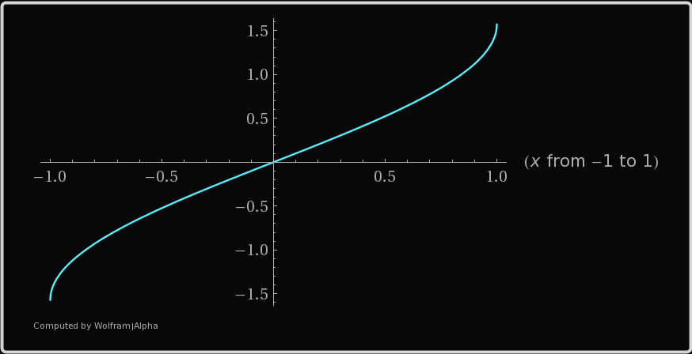
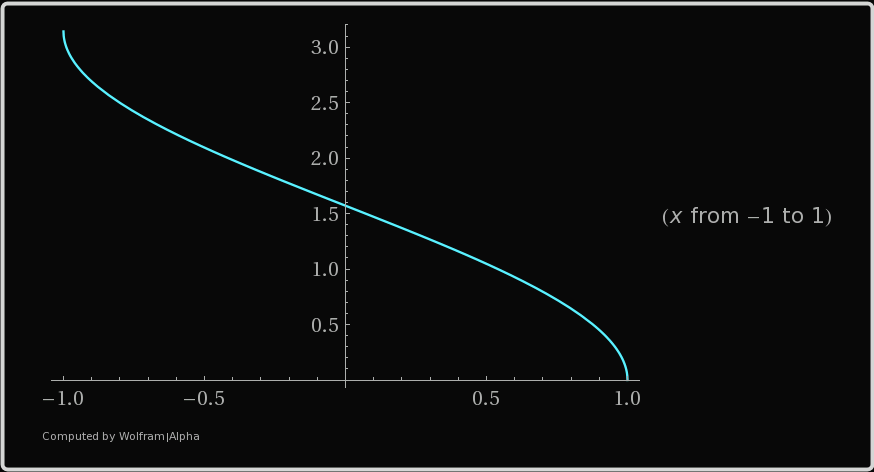

MAT100 for ELK og KOM
Uke 4
09.09.2015
Alexander Lundervold
institutt for data- og realfag
Sist uke
- Sammensetting / komposisjon av funksjoner
- Inverse funksjoner
- Trigonometriske funksjoner
Denne uken
- Eksponensialer og logaritmer
- Absoluttverdier og ulikheter
- Grenseverdier til funksjoner
- Kontinuerlige funksjoner
Husk: inverse trigfunksjoner
$y=arcsin(x)$
{kind=link}
$D = [-1,1]$, $V = \big[-\frac{\pi}{2}, \frac{\pi}{2}\big]$
$y=arccos(x)$
$D = [-1,1]$, $V = [0, \pi]$
$y=arctan(x)$

$D = (-\infty,\infty)$, $V = \big(-\frac{\pi}{2}, \frac{\pi}{2}\big)$
Eksponentialer og logaritmer
Motivasjon: Eksponentiell vekst


Regneregler
Vi har for eksempel:
$$ \begin{align*} & a^0 = 1\\ &(a^x)^y = a^{xy}\\ & a^x \cdot a^y = a^{x+y}, \quad \frac{a^x}{a^y} = a^{x-y} \\ &\frac{a^x}{b^x} = \left(\frac{a}{b}\right)^x, \quad a^x \cdot b^x = (ab)^x \end{align*} $$Disse reglene må fås "inn i fingrene". Regn mange oppgaver!
Løs ligningen $\quad 8^{x-1} = 32 \cdot 2^x.$
Vi har
$$
\begin{align*}
8^{x-1} &= 32 \cdot 2^x\\
(2^3)^{x-1} &= 2^5 \cdot 2^x \\
2^{3x-3} &= 2^{5+x}
\end{align*}
$$
Dermed må: $\quad 3x-3 = 5+x$
Så $x=4$.
Regneregler
Vi har for eksempel:
$$ \begin{align*} & \log_a(1) = 0\\ &\log_a(x) = \frac{\ln x}{\ln a}\\ &\log_a(x^r) = r\log_a(x)\\ & \log_a(xy) = \log_a(x) + \log_a(y)\\ &\log_a\left(\frac{x}{y}\right) = \log_a(x)-\log_a(y)\\ \end{align*} $$
Løs ligningen $\quad \ln(x^2+1) - 2\ln x = 2 \ln 5 - 4 \ln 2$.
Vi har
$$
\begin{align*}
\ln(x^2+1) - 2\ln x &= 2 \ln 5 - 4 \ln 2\\
\ln(x^2+1) - \ln(x^2) &= \ln(5^2) - \ln(2^4)\\
\ln\left(\frac{x^2+1}{x^2}\right) &= \ln\left(\frac{5^2}{2^4}\right)\\
\frac{x^2+1}{x^2} &= \frac{5^2}{2^4}\\
16(x^2+1) &= 25x^2 \\
x^2 &= 16/9,
\end{align*}
$$
Dermed må: $\quad x = 4/3\,$. (Kan ikke ha negative verdier av x siden vi skal ta $\,\ln x\,$ i opprinnelig ligning).
Grenseverdier
Regneregler:
$$ \begin{align*} &\lim_{x\rightarrow a} \big(f(x) \pm g(x)\big) = L \pm M\\ &\lim_{x\rightarrow a} \big(f(x) \cdot g(x)\big) = L \cdot M\\ &\lim_{x\rightarrow a} \big(k \cdot f(x)\big) = k \cdot L, \quad \text{der k er et tall}\\ &\lim_{x\rightarrow a} \bigg(\frac{f(x)}{g(x)}\bigg) = \frac{L}{M}, \quad \text{så lenge } M \neq 0 \end{align*} $$